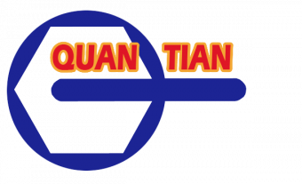

Видео

MITEX 2026 · Тайвань · Стенд 7А1201
Quan Tian Co., Ltd
Карточка проверена 10 ноября 2026, 09:25 · Источник ↗ · Снимок оригинальной карточки ↗
О компании
Quan Tian обладает комплексными возможностями в области исследований, разработок и производства. Около 80% производственных процессов выполняется непосредственно на нашем собственном заводе. Мы используем автоматизированное оборудование и строгую систему контроля качества и имеем сертификат ISO 9001:2015. В соответствии с требованиями клиентов Quan Tian предоставляет услуги OEM, ODM и индивидуальной разработки продукции, обеспечивая комплексную поддержку на всех этапах — от проектирования и изготовления прототипов до массового производства. Quan Tian работает с клиентами из Европы, Америки, Азии и других международных рынков и поддерживает долгосрочное сотрудничество с известными брендами из разных стран. Мы постоянно создаём более конкурентоспособную инструментальную продукцию, сочетая высокую точность производства и превосходное качество.
Контакты
Сайт: https://www.juhsin.com.twE-mail: juhsin1@ms57.hinet.netE-mail: yirouc91@gmail.comТелефон: +886-(04)-2278-8451Телефон: +886-(09)-0597-5577
Все контактные сведения из карточки
Контакты Xinglong Rd. Телефон: +886-(04)-2278-8451 E-mail: juhsin1@ms57.hinet.net Адрес: 411, Тайвань, Taichung City, No. 36, Aly. 37, Ln. 76, Sec. 1, Xinglong Rd., Taiping Dist. Веб-сайт: https://www.juhsin.com.tw E-mail: yirouc91@gmail.com Телефон: +886-(09)-0597-5577
Все рубрики участника
Mitex - Рубрикатор
- 2. Садовая техника, инструмент, инвентарь, оборудование, расходные материалы и насосы
- 4. Инструмент и оборудование для строительно-монтажных, окрасочных и малярных работ
- 6. Инструменты и оборудование для обработки и резки металла, проволоки, труб, камня, стекла, керамики, пластмасс, дерева
- 8. Инструмент и оборудование для автосервиса
- 12. Крепеж, метизы, скобяные изделия
Зал
- Зал № 7
Участник выставки
- MITEX
Фотографии и изображения
Видео, каталоги и документы
Видео
YouTube video player
Открыть у участника ↗Материал компании
catalogue 2025.pdf
Открыть у участника ↗Каталог продукции участника
Материалы каталога
Mitex 2024, 2025 Это фото нашего стенда на выставке MITEX 2024. В этом году мы будем представлены в Павильоне 5, стенд 5А901 — будем рады видеть Вас! Галерея стенда — 2025 2024 Booth Photo
Материалы каталога
Цифровой каталог Во вложении Вы найдете наш последний каталог продукции, включающий полный ассортимент профессиональных инструментов и решений. Приглашаем Вас ознакомиться с каталогом для получения подробных характеристик и будем рады ответить на любые Ваши запросы в соответствии с Вашими требованиями Цифровой каталог
Цифровой каталог
Цифровой каталог Some products are not included in the catalogue. If you are interested in other tools, please feel free to contact us directly. Вложения catalogue 2025.pdf 10.09.2026 8 246.78 MB
Материалы каталога
Mitex 2024, 2025 Цифровой каталог
Галерея стенда — 2025
Галерея стенда — 2025
2024 Booth Photo
2024 Booth Photo